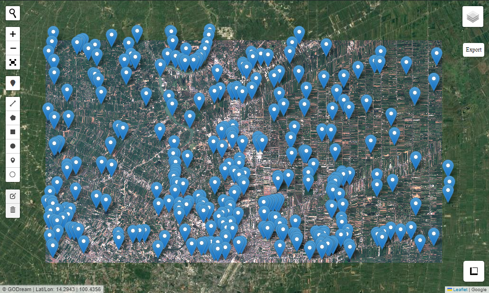
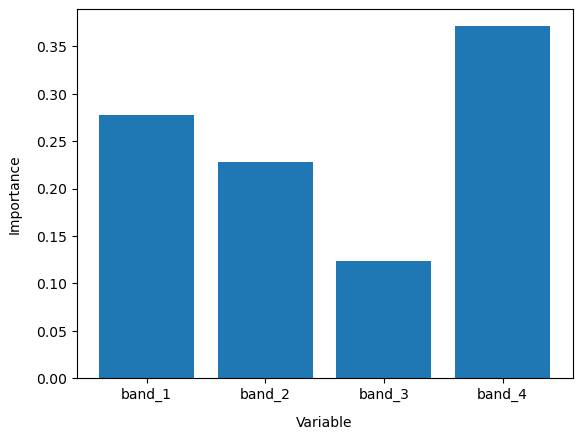
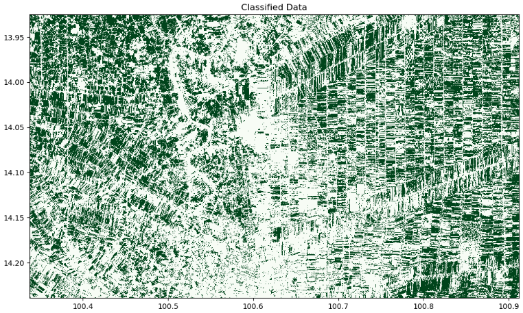

ML
Machine Learning for Classification
Import package
import numpy as np
import matplotlib.pyplot as plt
import rasterio
import rioxarray
import geopandas as gpd
import numpy as np
from sklearn import model_selection
from sklearn.ensemble import RandomForestClassifier
from sklearn.metrics import accuracy_score
from Godream.plotimg import overlay_map
from Godream.convertool import xarray_ds, geojson_add_Newcol
from Godream.geobox import extract_by_point, merge
from Godream.classification import predict_xray
Set Input
file_name = "data/S2_image3.tif" # raster image file
v1 = 'data/rice_point.geojson' # point of rice in vector
v2 = 'data/urban_point.geojson' # point of urban in vector
v3 = 'data/water_point.geojson' # point of water in vector
vector = [v1, v2, v3]
filer = [file_name]
Display input
It may take several minute to display map.
As you can see the 3 diferance type of land use in 3 vector files. That is consist of rice, urban and water.
#Visualize vector and raster files
overlay_map(vector_file=vector , raster_file = filer, with_draw_tools=True,zoom=None )

Create Xarray dataset
Create Xarray dataset from raster image
Use 'xarray_ds' to convert raster image to xarray dataset
Data preparation
Add new colume
Add new colume to set code value to identify the type of landuse.
The case study set new column name : "class".
And value of each column was sapareted to these:
Code 111 : padd field / 222 : Urban / 333 : water
| class | geometry | |
|---|---|---|
| 0 | 111 | POINT (100.66825 14.12306) |
| 1 | 111 | POINT (100.68223 14.13092) |
| 2 | 111 | POINT (100.58157 14.14916) |
| 3 | 111 | POINT (100.58988 14.15341) |
| 4 | 111 | POINT (100.85970 14.18962) |
Merge file together
<class 'geopandas.geodataframe.GeoDataFrame'>
RangeIndex: 311 entries, 0 to 310
Data columns (total 2 columns):
# Column Non-Null Count Dtype
--- ------ -------------- -----
0 class 311 non-null int64
1 geometry 311 non-null geometry
dtypes: geometry(1), int64(1)
memory usage: 5.0 KB
Extract raster value by point
Use 'extract_by_point' to extract value of each band of satellite image (raster image).
As you can see on the output, there are the column of each band from raster image file input.
# set input parameter
raster = 'data/S2_image3.tif'
points = 'data/trainset.geojson'
output_vector = 'data/trainset_DN.geojson'
| class | geometry | band_1 | band_2 | band_3 | band_4 | |
|---|---|---|---|---|---|---|
| 0 | 111 | POINT (100.66825 14.12306) | 509.0 | 859.0 | 962.0 | 3781.0 |
| 1 | 111 | POINT (100.68223 14.13092) | 562.0 | 927.0 | 1019.0 | 1682.0 |
| 2 | 111 | POINT (100.58157 14.14916) | 573.0 | 938.0 | 1035.0 | 2763.0 |
| 3 | 111 | POINT (100.58988 14.15341) | 592.0 | 920.0 | 1033.0 | 2717.0 |
| 4 | 111 | POINT (100.85970 14.18962) | 590.0 | 889.0 | 990.0 | 2513.0 |
| ... | ... | ... | ... | ... | ... | ... |
| 306 | 333 | POINT (100.59200 14.09595) | 563.0 | 758.0 | 1038.0 | 466.0 |
| 307 | 333 | POINT (100.90402 14.20271) | 520.0 | 788.0 | 984.0 | 407.0 |
| 308 | 333 | POINT (100.67575 14.17692) | 526.0 | 758.0 | 980.0 | 620.0 |
| 309 | 333 | POINT (100.52054 14.13157) | 890.0 | 1214.0 | 1280.0 | 466.0 |
| 310 | 333 | POINT (100.76937 14.13664) | 451.0 | 726.0 | 956.0 | 401.0 |
311 rows × 6 columns
Preprocessing data
set the column name to be the variable to train model
# select column name
columns = ['class','band_1','band_2','band_3', 'band_4']
# read input
gdf = gpd.read_file(output_vector)
#set column for model input
gdf[columns]
model_input1 = gdf[columns]
float64
Our training data has multiple classes in it. However, we are only trying to predict one class (i.e. class label 111, paddy field) with this model. We therefore remove other classes from our training data by setting the label value for all other classes to 0.
Split data set
Split data set to training data 70% and testing data 30%
# Split into training and testing data
model_train, model_test = model_selection.train_test_split(
model_input2, stratify=model_input2[:, 0], train_size=0.7, random_state=0)
print("Train shape:", model_train.shape)
print("Test shape:", model_test.shape)
Train shape: (217, 5)
Test shape: (94, 5)
Use a custom subset of the satellite bands loaded above to train our data, you can replace column_names[1:] with a list of selected band names (e.g. ['red', 'green', 'blue', 'nir'])
# Select the variables we want to use to train our model
model_variables = columns[1:]
# Extract relevant indices from the processed shapefile
model_col_indices = [
columns.index(var_name) for var_name in model_variables
]
Train Model
# initial the model
rf_model = RandomForestClassifier(n_estimators=100, random_state=42)
# Train model
rf_model.fit(model_train[:, model_col_indices], model_train[:, 0])
RandomForestClassifier(random_state=42)In a Jupyter environment, please rerun this cell to show the HTML representation or trust the notebook.
On GitHub, the HTML representation is unable to render, please try loading this page with nbviewer.org.
RandomForestClassifier(random_state=42)
# This shows the feature importance of the input features for predicting the class labels provided
plt.bar(x=model_variables, height=rf_model.feature_importances_)
plt.gca().set_ylabel('Importance', labelpad=10)
plt.gca().set_xlabel('Variable', labelpad=10)

# accuracy of the model
predictions = rf_model.predict(model_test[:, model_col_indices])
accuracy_score(predictions, model_test[:, 0])
1.0
Prediction
It may take several minute for classification.
# Predict landcover using the trained model
predicted = predict_xray(rf_model, input_xr=ds, clean=True)
Plot classified ouput
# Set up plot
fig, axes = plt.subplots(1, 1, figsize=(12, 6)) # Set up one subplot
# Plot classified image
predicted.Predictions.plot(ax=axes,
cmap='Greens',
add_labels=False,
add_colorbar=False)
# Add a plot title
axes.set_title('Classified Data')
# Display the plot
plt.show()
